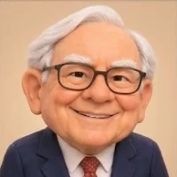

Titans' picks
Berkshire Hathaway holdings · latest filing

Warren Buffett took control of Berkshire Hathaway in 1965 and, over the decades, moved away from buying cheap companies toward holding good ones. He looks for a business whose earnings he can understand, that rivals find hard to copy, and whose managers he can leave alone — and then keeps it for years. Open any row below to see how a position moved, quarter by quarter.
워런 버핏은 1965년 버크셔 해서웨이의 경영을 맡은 뒤, 싼 회사를 사는 데서 좋은 회사를 오래 갖는 쪽으로 옮겨 갔습니다. 무엇으로 돈을 버는지 이해할 수 있고, 경쟁자가 쉽게 흉내 내지 못하고, 맡겨 두어도 좋을 경영진이 있는 회사를 골라 여러 해를 들고 갑니다. 아래 목록에서 한 줄을 펼치면 그 판단이 분기마다 어떻게 움직였는지 보입니다.
버크셔 공시를 보고 따라 샀다면? 알리시아의 투자 실험 →
What if you followed Berkshire’s filings? Explore Alicia’s strategy →
“Be fearful when others are greedy, and be greedy when others are fearful.”
New York Times, 16 October 2008
“남이 탐욕스러울 때 두려워하고, 남이 두려워할 때 탐욕스러워지라.”
2008년 10월 16일 뉴욕타임스 기고
“Our favorite holding period is forever.”
1988 letter to shareholders
“우리가 가장 좋아하는 보유 기간은 ‘영원히’입니다.”
1988년 주주 서한
Q3 2026 portfolio snapshot
Filed 2026-11-16
Berkshire Hathaway reports 27 US-listed stock positions. The largest 3 positions are Apple Inc (AAPL, 25.0%), American Express Co (AXP, 15.2%) and Alphabet Inc (GOOGL/GOOG, 12.0%).
Compared with the Q2 2026 filing. Newly present: Bending Spoons Spa (BSP).
2026년 3분기 보유 요약
2026.11.16 공시
버크셔 해서웨이의 미국 상장 주식 보유 기록은 27종목입니다. 보유 금액 상위 3종목은 Apple Inc (AAPL, 25.0%), American Express Co (AXP, 15.2%), Alphabet Inc (GOOGL/GOOG, 12.0%)입니다.
2026년 2분기 공시와 비교했습니다. 새로 나타난 종목은 Bending Spoons Spa (BSP)입니다.
All holdings and weight changes전체 보유 종목과 비중 변화
| Stock종목 | Weight비중 | Change (pp)변화 (%p) |
|---|---|---|
| Apple Inc (AAPL) | 25.0% | +2.9 |
| American Express Co (AXP) | 15.2% | −2.0 |
| Alphabet Inc (GOOGL/GOOG) | 12.0% | −0.7 |
| Coca Cola Co (KO) | 11.3% | +0.5 |
| Bank of Amer Corp (BAC) | 8.2% | −1.0 |
| Chevron Corporation (CVX) | 5.7% | +1.0 |
| Occidental Pete Corp (OXY) | 4.8% | +0.5 |
| Moodys Corp (MCO) | 3.7% | −0.1 |
| Chubb Limited (CB) | 3.7% | −0.2 |
| Kraft Heinz Co (KHC) | 2.4% | −0.1 |
| Delta Air Lines Inc (DAL) | 1.8% | 0.0 |
| Davita Inc (DVA) | 1.7% | −0.5 |
| Siriusxm Holdings Inc (SIRI) | 1.1% | −0.2 |
| Lennar Corp (LEN/LEN-B) | 0.7% | +0.3 |
| Kroger Co (KR) | 0.7% | 0.0 |
| Verisign Inc (VRSN) | 0.5% | −0.2 |
| Liberty Live Holdings Inc (LLYVK/LLYVA) | 0.5% | 0.0 |
| Ally Finl Inc (ALLY) | 0.3% | −0.1 |
| New York Times Co MTN Be (NYT) | 0.3% | 0.0 |
| Bending Spoons Spa (BSP) | 0.2% | Newly present새로 나타남 |
| Nucor Corp (NUE) | 0.1% | 0.0 |
| Louisiana Pac Corp (LPX) | 0.1% | 0.0 |
| Capital One Finl Corp (COF) | <0.1% | −0.1 |
| Macys Inc (M) | <0.1% | 0.0 |
| NVR Inc (NVR) | <0.1% | 0.0 |
| Jefferies Financial Group In (JEF) | <0.1% | 0.0 |
| D R Horton Inc (DHI) | <0.1% | 0.0 |